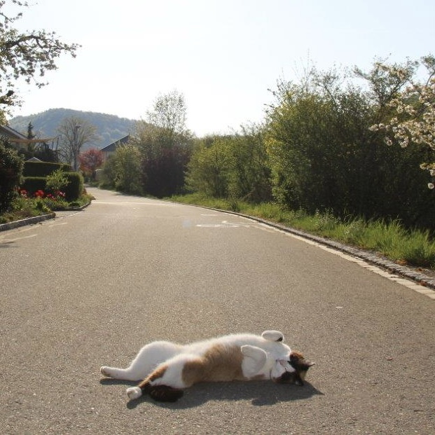
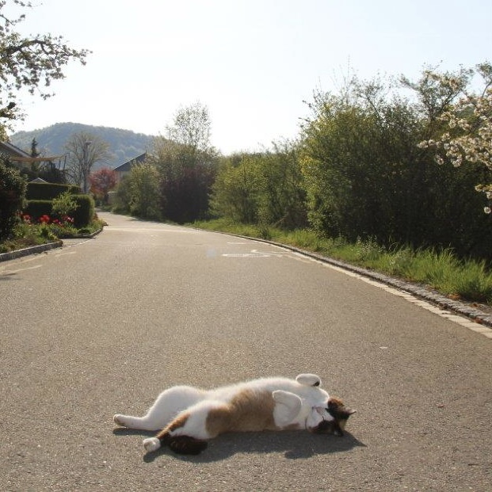

Blanchi ist am 19. Mai 2012 geboren. Sie ist eine englische Kurzhaar, mit der Fellfarbe einer Siamkatze. Sie ist zur Familie sehr zutraulich und liebt es zu kuscheln und gestreichelt zu werden.
Sie beschützt ihr Revier, das Grundstück mit ihrem Leben. Kein Tier darf seine Läufen auf ihr Revier setzen. Sie ist oft draussen unterwegs, geniesst das Wetter und kommt zur Essenszeit wieder zurück nach Hause.
Blanchi und Schnäuzli waren unzertrennlich, doch ab dem Jahr 2018 ging es Schnäuzli immer schlechter. Er wurde auf Diabetik und einen Gehirntumor diagnostiziert. Niemand wusste wie lange er noch zu leben hatte.
Am 30. Juli 2019 erlitt er in der Nacht einen epileptischen Anfall. Am nächsten Tag mussten wir ihn von seinen Schmerzen befreien und einschläfern lasse.
Nach 2 Jahren beschlossen wir, da Verwandte von uns Kätzchen hatten, eine neue Katze in unsere Familie aufzunehmen. Als Yuki 5 Monate alt war, zog sie bei uns ein. Sie war eine sehr spielerische und neugierige Katze. Yuki verbrachte viel Zeit im Garten und in der Nachbarschaft.
Doch dies wurde ihr zum Verhängnis. Nach 2 Wochen bei uns verlor sie ihr leben auf der Strasse durch ein Auto welches sie überfuhr. Der Fahrer begann Fahrerflucht. In dieser kurzen Zeit welche sie bei uns verbrachte, brachte sie uns mit ihrem frechen Wesen oft zum Lachen. Ruht in Frieden.
 
